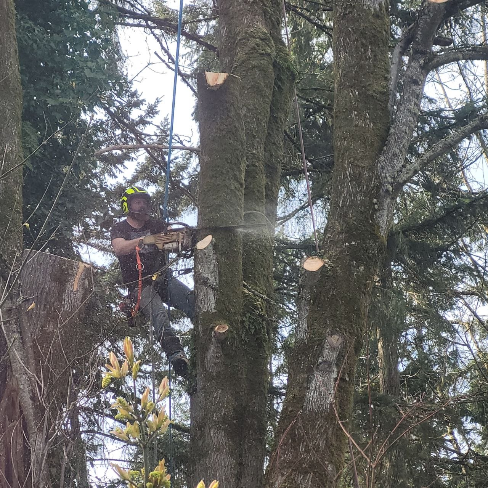
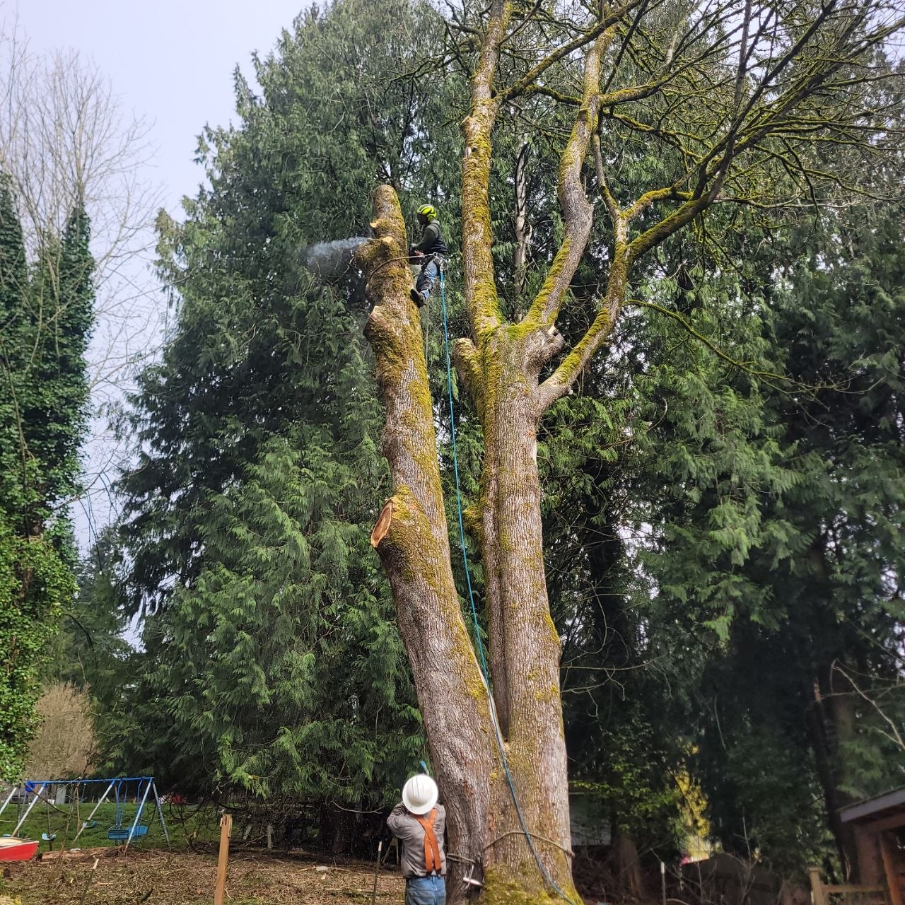
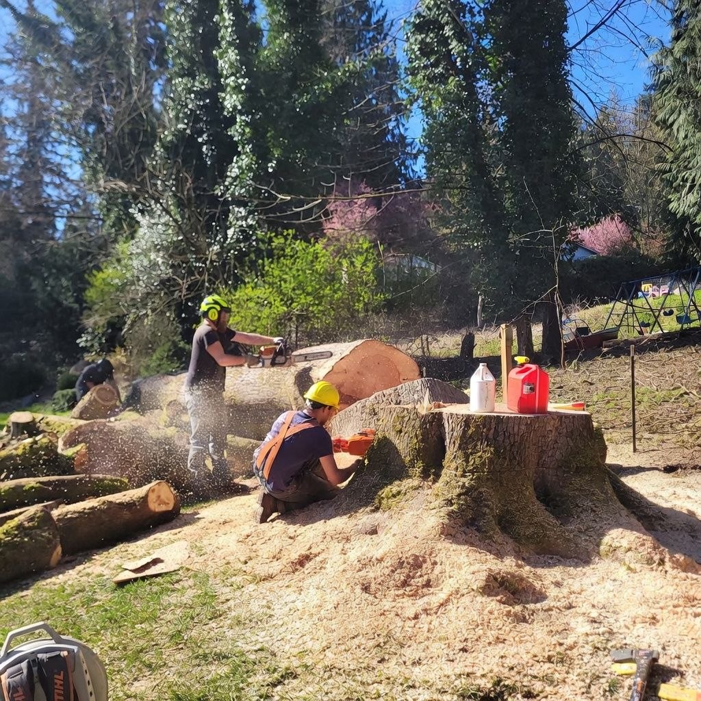
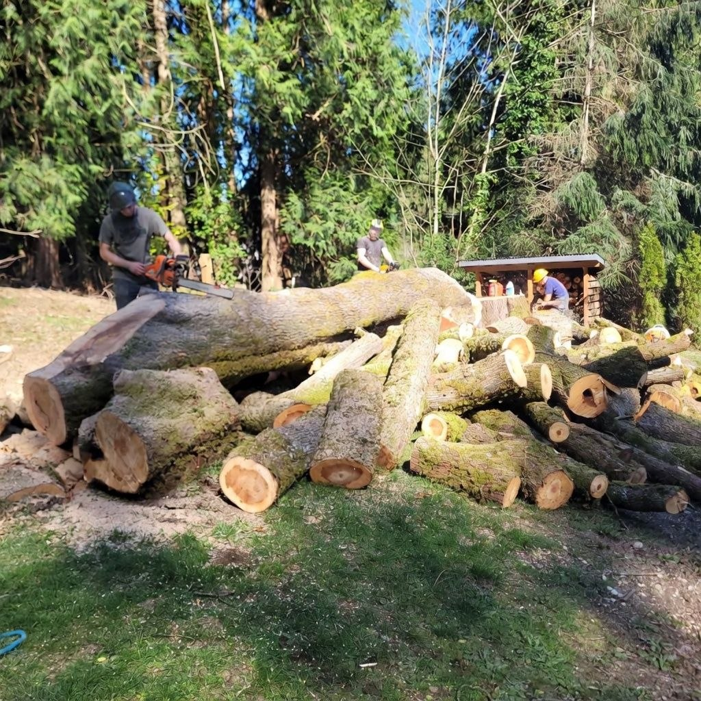
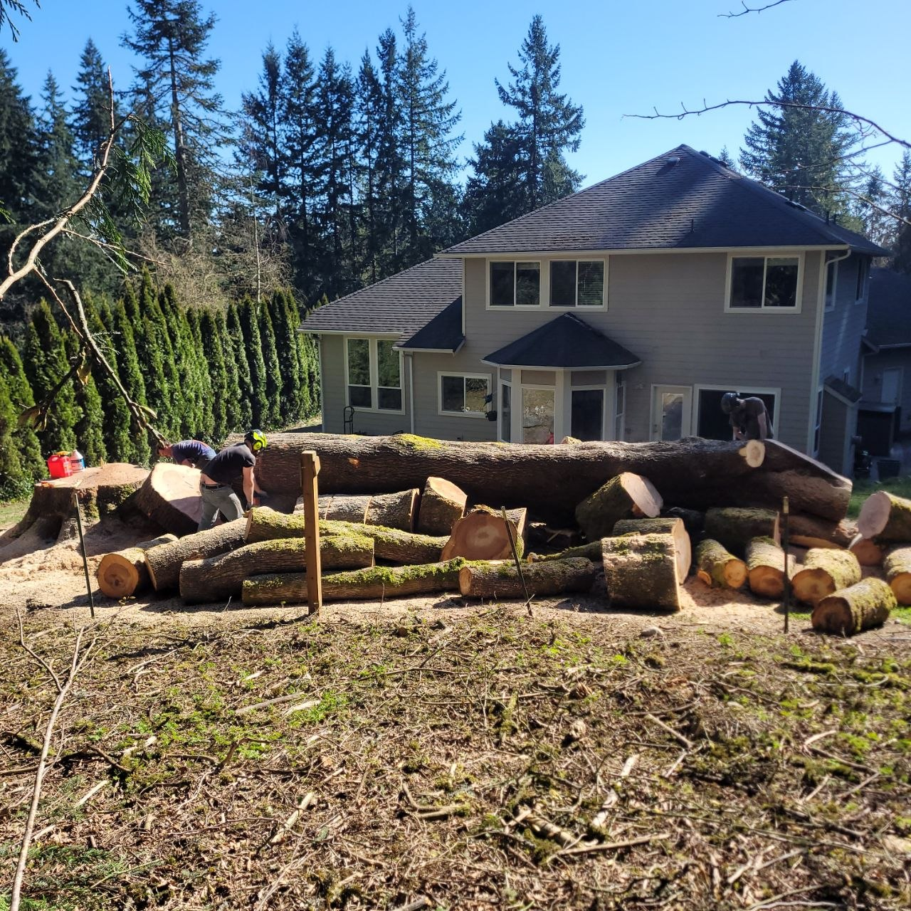
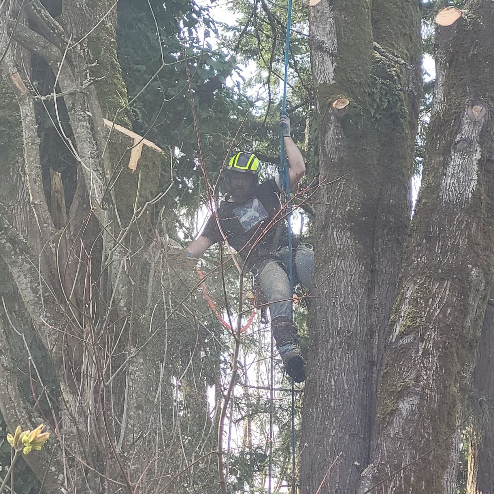

"Your yard is a stage, so Take a Bough."
Professional tree care serving Snohomish County and the greater Puget Sound region. Licensed, insured, and trusted by thousands of homeowners for over 25 years.
Fully licensed, bonded, and insured for your protection
Over a decade of trusted tree care in the Pacific Northwest
No-obligation quotes for every project, big or small
Storm damage response when you need it most
From routine maintenance to emergency response, we deliver comprehensive tree care solutions with the professionalism and precision your property deserves.

Safe, efficient removal of hazardous, dead, or unwanted trees using industry-leading techniques and equipment. We handle projects of every scale.
Learn More →
Expert crown thinning, deadwood removal, and canopy shaping to promote healthy growth and enhance your property's curb appeal.
Learn More →
Complete stump removal below grade level, leaving your yard clean and ready for replanting, landscaping, or new construction.
Learn More →
24/7 rapid response for fallen trees, broken limbs, and storm debris. We work with insurance companies to streamline the claims process.
Learn More →
Comprehensive lot clearing for residential and commercial development, including brush removal, selective clearing, and habitat-sensitive approaches.
Learn More →
Professional tree health assessments, risk evaluations, and planting recommendations from experienced certified arborists.
Learn More →When you trust us with your trees, you get a team that treats every property like our own.
With over 25 years of hands-on experience in the Pacific Northwest, we understand the unique challenges posed by the region's diverse tree species, soil conditions, and weather patterns. Our crews have safely completed thousands of jobs across nine counties.
Our crews follow strict safety protocols on every job site, from proper rigging and fall protection to careful equipment handling. We carry comprehensive general liability and workers' compensation insurance so you never have to worry about liability on your property. Before any work begins, we conduct a thorough site assessment to identify hazards and plan the safest approach for your trees, your home, and our team.
No hidden fees, no surprise charges. We provide detailed written estimates before any work begins, and we stand behind our quotes. If something changes during the job, we communicate with you before proceeding.
We believe in responsible tree care. We recycle 100% of the wood and green waste we remove, practice selective clearing whenever possible, and consult on replanting strategies to keep the Pacific Northwest green.
We specialize in removing trees dangerously close to homes, garages, fences, and power lines. Our precision rigging and controlled felling techniques ensure your property stays protected — no matter how tight the space.
Proudly serving homeowners, businesses, and municipalities across the greater Puget Sound region from our home base in Snohomish County.
Our home base — Everett, Marysville, Lake Stevens, Snohomish, Monroe, Edmonds, Lynnwood, Mountlake Terrace, and all surrounding communities
Bellevue, Redmond, Kirkland, Bothell, Woodinville, Shoreline
Mount Vernon, Burlington, Sedro-Woolley, Anacortes, La Conner
Whidbey Island, Camano Island, Oak Harbor, Coupeville, Langley
Bellingham, Ferndale, Lynden, Blaine, Everson
Tacoma, Puyallup, Lakewood, Bonney Lake, University Place
Bremerton, Silverdale, Poulsbo, Bainbridge Island, Port Orchard
Leavenworth, Wenatchee, Cashmere, Chelan
Friday Harbor, San Juan Island, Orcas Island, Lopez Island
Don't just take our word for it. Hear from the homeowners and property managers who trust Take A Bough with their trees.
"We had a 90-foot Douglas Fir leaning toward our house after a windstorm, and the Take A Bough crew was onsite within two hours. They removed it safely and left our yard looking better than before. Professional from start to finish."
"I've used three different tree services over the years, and Take A Bough is by far the best. Their arborist identified a disease in two of our maples that no one else caught. They saved both trees. I recommend them to every homeowner I know."
"We needed five acres cleared for a new build and Take A Bough handled the entire project — permits, selective clearing, debris hauling, everything. They finished on time and under budget. Outstanding communication throughout the entire process."